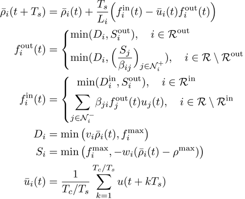
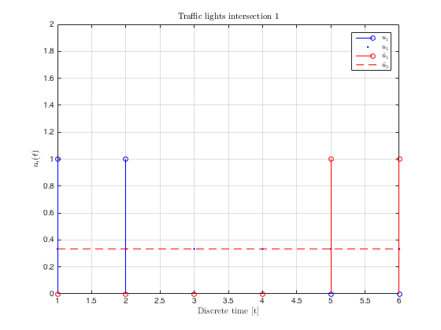
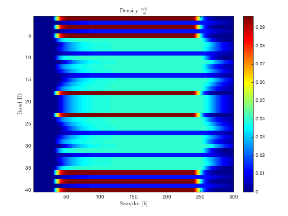
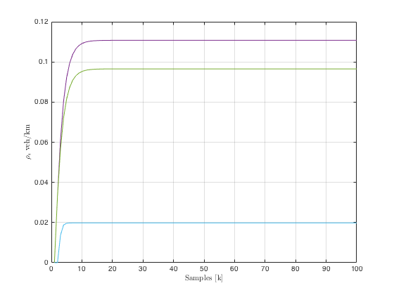
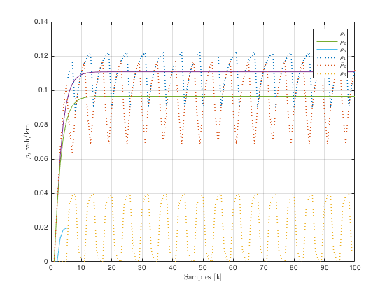

ITS Session 2: Control of large scale Traffic Networks
Contents
Average CTM
Let us recall the model.

Parameter setup
Setting up the parameters
Ts = 15; % sampling time Tc = 90; % cycle time of traffic lights T = Tc/Ts; % cycle time/ sampling time Li = 500; % cell length [m] maxSpeed = 50/3.6; % free flow speed [m/s] maxDensity = 0.125; % maximum density [veh/m] maxFlow = 0.55; % maximum flow [veh/s] rhoC = maxFlow/maxSpeed; % critical density congSpeed = abs(maxFlow/(rhoC - maxDensity)); % w
The main important change is the parameter:
type = 'RoadAvgFifoCTM'; % model type
Network object
netNoControlAvg = Net(Ts, T, (1:nRoads)');
Assign the incidence matrix to the object
netNoControlAvg.iM = incMat;
Assign the adjacency matrix to the object
netNoControlAvg.turnings= adjMat;
Set parameters to the network
netNoControlAvg.initialize(Li, maxSpeed, congSpeed, maxDensity, ...
maxFlow, rhoC, type)
netNoControlAvg
netNoControlAvg =
Net with properties:
iM: [40x16 double]
rA: []
lM: [40x1 double]
turnings: [40x40 double]
sampleTime: 15
period: 6
roads: [1x40 RoadAvgFifoCTM]
lights: [1x40 Light]
isControlled: 1
Traffic lights setup
Setup the flag so the network is run under manual control
netNoControlAvg.isControlled= 0; setTrafficLightsManhattanMultipleIO(netNoControlAvg,nCols); netNoControlAvg.lights(1).values % Let's check the traffic lights. For a particular % intersection: upstream = find(incMat(:,1)==1); figure(1),clf stem(1:T,netNoControlAvg.lights(upstream(1)).values,'b'), hold on, plot(1:T,repmat(mean(netNoControlAvg.lights(upstream(1)).values),1,T),'b.'), hold on, stem(1:T,netNoControlAvg.lights(upstream(2)).values,'r'), grid on, plot(1:T,repmat(mean(netNoControlAvg.lights(upstream(2)).values),1,T),'r--'), hold on, lgn = legend('$u_1$','$u_1$','$\bar{u}_1$','$\bar{u}_5$'); set(lgn,'interpreter','latex'); ylim([0,2]) xlabel('Discrete time [t]','interpreter','latex') ylabel('$u_i(t)$','interpreter','latex') title('Traffic lights intersection $1$','interpreter','latex')
ans =
1 1 0 0 0 0
 Simulation parameters
Setup for simulation parameters:
nCycles = 50; time = [1 T*nCycles]; % number of iterations Sout = maxFlow*ones(nRoads,time(end)); % burstValue = 0.4; t0 = time(end)*0.1; tf = time(end)*0.8; Din = inputDemandManhattan(netNoControlAvg, burstValue,... t0, tf, time(end)); %
Simulation
Use the method simul in the object Net to simulate the system.
[totDensitySCTM,~,...
totLightsSCTM,~,~] = netNoControlAvg.simul(time,zeros(1,nRoads),Din,Sout);
figure(3),clf imagesc(time(1):time(end),1:nRoads,totDensitySCTM) map = retrieve_color_heatmap; colormap(flipud(map)); colormap(jet) colorbar xlabel('Samples [k]','interpreter','latex') ylabel('Road ID','interpreter','latex') title('Density $\frac{veh}{m}$','interpreter','latex')
Merge example
Network setup
incMatrixMerge = [1;1;-1]; adjMatrixMerge = [0 0 1;0 0 1;0 0 0]; nRoadsMerge = size(incMatrixMerge,1);
Parameters
Ts = 15; % sampling time Tc = 90; % cycle time of traffic lights T = Tc/Ts; % cycle time/ sampling time Li = 250; % cell length [m] maxSpeed = 50/3.6; % free flow speed [m/s] maxDensity = 0.125; % maximum density [veh/m] maxFlow = 0.55; % maximum flow [veh/s] rhoC = maxFlow/maxSpeed; % critical density congSpeed = abs(maxFlow/(rhoC - maxDensity)); % w type = 'RoadAvgFifoCTM';% model type
Network inizialization
netMergeAvg = Net(Ts, T, (1:nRoadsMerge)');
Assign the incidence matrix to the object
netMergeAvg.iM = incMatrixMerge;
Assign the adjacency matrix to the object
netMergeAvg.turnings = adjMatrixMerge;
Set parameters to the network
netMergeAvg.initialize(Li, maxSpeed, congSpeed, maxDensity, ...
maxFlow, rhoC, type)
netMergeAvg
netMergeAvg =
Net with properties:
iM: [3x1 double]
rA: []
lM: [3x1 double]
turnings: [3x3 double]
sampleTime: 15
period: 6
roads: [1x3 RoadAvgFifoCTM]
lights: [1x3 Light]
isControlled: 1
netMergeAvg.isControlled = 0; netMergeAvg.lights(1).values = [ones(1,1),zeros(1,5)]; netMergeAvg.lights(2).values = [zeros(1,4),ones(1,2)]; netMergeAvg.lights(3).values = [ones(1,6)];
Setup for simulation parameters:
nCycles = 50; time = [1 T*nCycles]; % number of iterations SoutMerge = maxFlow*ones(nRoadsMerge,time(end)); DinMerge = []; DinMerge(1,:) = 300*ones(1,time(end)); DinMerge(2,:) = 700*ones(1,time(end)); DinMerge(3,:) = zeros(1,time(end)); [totDensityMergeAvg,~,... totLightsMergeAvg,~,~] = netMergeAvg.simul(time,zeros(1,nRoadsMerge),... DinMerge,SoutMerge);
Plot the density
figure(4),clf colors = colormap(lines); p1 = plot(1:100,totDensityMergeAvg(:,1:100)'); p1(1).Color = colors(4,:); p1(2).Color = colors(5,:); p1(3).Color = colors(6,:); grid on xlabel('Samples [k]','interpreter','latex') ylabel('$\rho_i$ veh/km','interpreter','latex')
Execute only if the S-CTM example has been computed
hold on p2 = plot(1:100,totDensityMerge(:,1:100)'); for i = 1:3 p2(i).Color = colors(i,:); p2(i).LineWidth = 1.5; p2(i).LineStyle = ':'; end lgn = legend('$\rho_1$','$\rho_2$','$\rho_3$',... '$\bar{\rho}_1$','$\bar{\rho}_2$',... '$\bar{\rho}_3$'); set(lgn,'interpreter','latex');